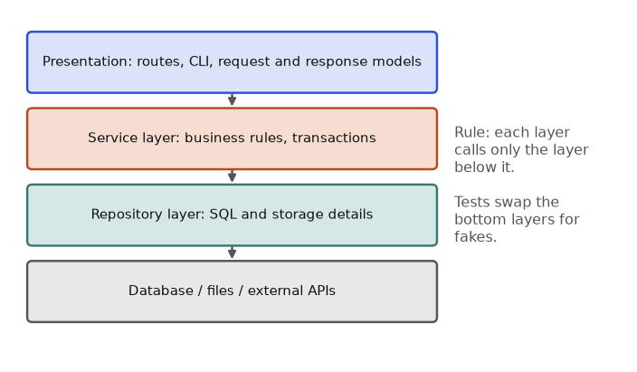

Picture your first week in a data team. You open a colleague's script. It has one function of 300 lines, names like x2 and tmp, a database password typed into the file, and no tests. Nobody dares to change it. Now picture the opposite: small named functions, tests that run on every push, secrets in the environment, and a package you can install in one command. This chapter shows you how to build the second kind. By the end you will be able to refactor messy code safely, explain how a team ships software (Agile, code review, CI/CD), keep secrets out of Git, stop SQL injection, store passwords correctly, and package your work with pyproject.toml.
Everything marked "run" was executed with Python 3.14 and the standard library. Anything needing a network or extra installs (GitHub Actions, gitleaks, pip-audit, build, twine) is marked not run here and shown in minimal, standard form. Check each tool's docs for current options.
Words you need. Refactoring means changing how code is written without changing what it does. Technical debt means shortcuts that make future changes slower, like a loan with interest. CI/CD means Continuous Integration (tests run automatically on every change) and Continuous Delivery/Deployment (releases happen automatically or with one click). Secret means any value that grants access: password, API key, token, private key.
The main rules, with the reason for each:
| Rule | What it means | Why it exists |
|---|---|---|
| Good names | slow_delivered_orders, not f | A name is the cheapest documentation |
| Small functions | One job, fits on a screen | Easy to test and to reuse |
| DRY (Don't Repeat Yourself) | One place for each piece of knowledge | A bug fixed once is fixed everywhere |
| Comments say why | Not what the code does | Code already says what; only you know why |
| No magic numbers | TIMEOUT_S = 5 | The number gets a meaning |
| Early return | Handle bad cases first | Less nesting |
| Types and docstrings | Say what goes in and out | Readers and tools can check |
Refactoring is done in small steps with tests that stay green. The safe loop is: (1) make sure tests exist, (2) change one thing, (3) run the tests, (4) repeat. If you have no tests, first write a few that capture today's behaviour.
When NOT to refactor: when you have no tests and a deadline tomorrow, add the tests first. Do not tidy code you are not otherwise touching just because you can.
Problem 13.1.1 Refactor a cryptic function. It takes shop order rows (order_id, delivery_minutes, status) and a threshold, and returns the order ids of delivered orders slower than the threshold.
Predict first: for the rows below with threshold 60, which order ids come out?
dataclass and the function by what it does.ifs into one comprehension.# BEFORE
def f(d, t):
r = []
for x in d:
if x[2] == "DELIVERED":
if x[1] > t:
r.append(x[0])
return r
rows = [("A101", 45, "DELIVERED"), ("A102", 12, "DELIVERED"), ("A103", 230, "LOST"), ("A104", 150, "DELIVERED")]
print(f(rows, 60))
# AFTER
from dataclasses import dataclass
@dataclass(frozen=True)
class Order:
order_id: str
delivery_minutes: int
status: str
def slow_delivered_orders(orders, threshold_minutes):
"""Return ids of delivered orders slower than threshold_minutes."""
return [o.order_id for o in orders if o.status == "DELIVERED" and o.delivery_minutes > threshold_minutes]
orders = [Order(*r) for r in rows]
print(slow_delivered_orders(orders, 60))
print(slow_delivered_orders(orders, 10))
print(f(rows, 10) == slow_delivered_orders(orders, 10))['A104']
['A104']
['A101', 'A102', 'A104']
TrueA101 is 45 (not above 60), A102 is 12, A103 is slow (230) but status is LOST so it is skipped, A104 is 150 and DELIVERED. Only A104. For threshold 10, the delivered rows are A101, A102, A104, all above 10.True), but a reader now knows what it does from its name, and the fields have names (o.delivery_minutes instead of x[1]).Problem 13.1.2 Remove repetition (DRY) from percentile code and give magic numbers names.
Predict: three copies of the same sort-and-index logic. After refactoring, how many copies of the formula exist?
import math
# BEFORE: the formula is copy-pasted three times
def p50(xs): xs = sorted(xs); return xs[max(0, math.ceil(len(xs) * 50 / 100) - 1)]
def p90(xs): xs = sorted(xs); return xs[max(0, math.ceil(len(xs) * 90 / 100) - 1)]
def p95(xs): xs = sorted(xs); return xs[max(0, math.ceil(len(xs) * 95 / 100) - 1)]
# AFTER: one function, one place to fix bugs
def percentile(xs, p):
"""Nearest-rank percentile, p in 1..100."""
xs = sorted(xs)
return xs[max(0, math.ceil(len(xs) * p / 100) - 1)]
data = [80, 95, 110, 120, 300]
print(p50(data), p90(data), p95(data))
print([percentile(data, p) for p in (50, 90, 95)])I ran this and checked the equality by hand: sorted data is 80, 95, 110, 120, 300 (n = 5). For p50: ceil(2.5) = 3, index 2, value 110. For p90 and p95: ceil(4.5) = 5 and ceil(4.75) = 5, index 4, value 300. Real output:
110 300 300
[110, 300, 300]110 300 300. If a bug is found in the formula, you now fix one line, not three.Predict, Run, Explain. Look at the typical wrong refactor: renaming a function in the definition but not at one call site. Python tells you only when that line runs, for example NameError: name 'p50' is not defined. That is exactly why you need tests (or a linter such as ruff, which flags undefined names before you run anything): the tests run every call site.
| Concept | Example | Where it appears in the job |
|---|---|---|
| Good name | slow_delivered_orders | Reviewing a teammate's pipeline in five minutes |
| Small function | percentile(xs, p) | Reused by report, alert and dashboard code |
| DRY | one percentile formula | One bug fix, many places repaired |
| Refactor with tests | same output before and after | Cleaning a legacy ETL script |
Check yourself
Layered architecture. Three layers are common:
Why: you can test the middle layer with a fake data layer, and you can change the database without touching the rules.
Dependency injection (DI) means giving a class the things it needs (a repository, a notifier) from outside instead of creating them inside. The repository pattern hides the database behind methods like save and get. A fake is a simple working stand-in (an in-memory repository). A mock is a recorder that checks how it was called.
Monolith vs microservices.
| Monolith | Microservices | |
|---|---|---|
| Shape | One deployable program | Many small services over the network |
| Good for | Small teams, early products, simple deployment | Big teams, parts that scale differently |
| Costs | Big codebase, one slow release train | Network failures, many deployments, hard debugging |
Start with a well-organised monolith. Split only when you feel real pain. A distributed system is slower to build and harder to debug than a single program.
Event-driven design means parts communicate by announcing events ("order placed") and other parts react. Message queues (RabbitMQ, Kafka, cloud queues) store messages between producer and consumer. Benefits: smoothing spikes, retries, and decoupling. Cost: messages may arrive twice (so consumers must be idempotent, see Chapter 12) or late.
Problem 13.2.1 Build a service with injected dependencies and test it using a fake repository and a mock notifier.
Predict: what total does place(1, [100, 250, 50]) return, and what message is sent?
OrderService receives repo and notifier in __init__.place sums prices, saves, and notifies.Mock notifier (records calls).from unittest.mock import Mock
class OrderRepository: # a real one would use a database
def __init__(self): self.rows = {}
def save(self, oid, total): self.rows[oid] = total
def get(self, oid): return self.rows.get(oid)
class FakeRepo(OrderRepository): pass # in-memory fake: real behaviour, no DB
class OrderService:
def __init__(self, repo, notifier): # dependencies injected
self.repo, self.notifier = repo, notifier
def place(self, oid, prices):
total = sum(prices)
self.repo.save(oid, total)
self.notifier.send(f"order {oid}: {total}")
return total
notifier = Mock()
svc = OrderService(FakeRepo(), notifier)
print(svc.place(1, [100, 250, 50]))
print(svc.repo.get(1))
notifier.send.assert_called_once_with("order 1: 400")
print(notifier.send.call_args)400
400
call('order 1: 400')assert_called_once_with raised nothing, which means the message was sent exactly once with the text we expected. (If it was wrong, you would see an AssertionError that shows expected and actual calls.)order 1: 400 was sent.Problem 13.2.2 Show the idea of a queue and of events in a few lines: a worker takes jobs from a queue.Queue, and an event bus calls every handler registered for an event.
Predict: in what order do the results appear, and how many handlers run on one event?
import queue, threading
q = queue.Queue()
results = []
def worker():
while True:
job = q.get()
if job is None:
break
results.append(job * job)
q.task_done()
t = threading.Thread(target=worker); t.start()
for n in range(1, 6): q.put(n)
q.put(None); t.join()
print(results)
handlers = {}
def on(evt):
def deco(fn): handlers.setdefault(evt, []).append(fn); return fn
return deco
def emit(evt, **data):
for h in handlers.get(evt, []): h(**data)
@on("order_placed")
def send_email(order_id): print("email for", order_id)
@on("order_placed")
def update_stock(order_id): print("stock updated for", order_id)
emit("order_placed", order_id=42)[1, 4, 9, 16, 25]
email for 42
stock updated for 42Typical wrong version: creating the repository inside the service (self.repo = PostgresRepo()). The service can no longer be tested without a database, and the test fails with a connection error like ConnectionRefusedError. The fix is the injection shown above.
| Concept | Example | Where it appears in the job |
|---|---|---|
| Layers | route to service to repository | A FastAPI model service with a feature store behind it |
| DI + fake | FakeRepo | Fast unit tests for a data pipeline step |
| Queue | Kafka topic, SQS queue | Buffering events before they are loaded into a warehouse |
| Event | "file arrived" | Starting an ETL run when data lands in a bucket |
Check yourself
Agile is a way of working in short cycles with frequent feedback. Scrum is a popular form of it:
(optimistic + 4 × likely + pessimistic) / 6. It weights the likely case but respects the risk of a long tail.Technical debt: quick-and-dirty code you plan to fix later. Some debt is wise (to hit a launch), but it must be written down and repaid. Signs of too much debt: fear of changing code, bugs that return, slow onboarding.
Code review is where a teammate reads your change before it merges. It catches bugs, spreads knowledge, and keeps the style consistent. Good reviews:
Documentation layers: a README (what it is, how to install and run in 5 lines), docstrings (what each function does), comments (why), and an architecture note. A docstring is the string at the top of a function. It can even hold runnable examples called doctests.
Problem 13.3.1 A task has optimistic 2 days, likely 4 days, pessimistic 12 days. Give the PERT estimate and compare with the simple average of the three.
| Formula | PERT = (O + 4M + P) / 6 |
|---|---|
| Plug in | (2 + 4 × 4 + 12) / 6 |
| Compute | 2 + 16 + 12 = 30, and 30 / 6 = 5.0. Simple average: (2 + 4 + 12) / 3 = 6.0. |
| Answer | The PERT estimate is 5.0 days. Promise 5 to 6 days, not the "likely" 4. |
| Check | The result lies between the likely value (4) and the average (6), pulled up a little by the long tail. A one-line check in Python: round((2 + 4*4 + 12) / 6, 2) printed 5.0 in a real run. |
| Why it matters | A promise of 4 days would be missed whenever the pessimistic case happens. Ranges and a weighted estimate give more honest dates. |
Problem 13.3.2 Write a docstring with doctests for percentile and run them automatically.
Predict: how many examples are tested, and do they pass?
The function below was saved in a small package (you will build it in 13.7) and tested with doctest:
import math
def percentile(values, p):
"""Nearest-rank percentile.
>>> percentile([80, 95, 110, 120, 300], 90)
300
>>> percentile([1, 2, 3, 4], 50)
2
"""
xs = sorted(values)
k = max(0, math.ceil(len(xs) * p / 100) - 1)
return xs[k]Running doctest.testmod on the module printed:
TestResults(failed=0, attempted=2)1,2,3,4, ceil(4 × 0.5) = 2, index 1, value 2.Typical wrong version: a docstring example with the wrong expected value (for example 300 replaced by 200). doctest reports the line, the expected output and the real output, and failed=1. The fix is to correct the example or the code, whichever is wrong.
| Practice | Example | Where it appears in the job |
|---|---|---|
| Sprint | 2 weeks, goal "daily report live" | How most data teams plan work |
| Estimate | PERT 5.0 days | Telling a manager when a pipeline will be ready |
| Tech debt ticket | "Replace hard-coded path" | Keeps a backlog of cleanups |
| Review comment | "What if rows is empty?" | Catches the empty-file bug before production |
| README | install, run, test in 5 lines | A teammate runs your program on day one |
Check yourself
Pipeline stages, in order: build (install, compile or package), test (unit and integration tests), lint (style and error checks with ruff, types with mypy), then deploy. A failing stage stops everything after it ("fail fast"). Cheap checks (lint) go first.
Tools: GitHub Actions (YAML files in .github/workflows/), Jenkins (self-hosted, a Jenkinsfile), GitLab CI, and others. Key ideas: a trigger (push, pull request, schedule), a runner (the machine), steps, and secrets stored in the CI system, never in the repo.
Not run here (it needs GitHub). A minimal, standard GitHub Actions file:
name: ci
on:
push:
branches: [main]
pull_request:
jobs:
test:
runs-on: ubuntu-latest
steps:
- uses: actions/checkout@v4
- uses: actions/setup-python@v5
with:
python-version: "3.12"
- run: pip install -e ".[dev]"
- run: ruff check .
- run: ruff format --check .
- run: mypy src
- run: pytest --cov=srcVersion tags such as @v4 change over time. Check the current ones on each action's page.
Problem 13.4.1 Simulate a tiny pipeline runner that stops at the first failing stage, and run it with a test stage that fails.
Predict: which stages run, and what is the final result?
import subprocess, sys
def stage(name, code):
r = subprocess.run([sys.executable, "-c", code], capture_output=True, text=True)
print(f"{name:6} -> {'PASS' if r.returncode == 0 else 'FAIL'}")
return r.returncode == 0
stages = [
("lint", "pass"),
("test", "assert 2 + 2 == 5"),
("deploy", "print('shipping')"),
]
for name, code in stages:
if not stage(name, code):
print("pipeline stopped at", name)
break
else:
print("pipeline passed")lint -> PASS
test -> FAIL
pipeline stopped at testfor ... else runs else only if the loop did not break.assert 2 + 2 == 5 raises AssertionError, so the child exits with code 1. Deploy never ran.Problem 13.4.2 A pipeline takes 12 minutes: lint 1, unit tests 4, integration tests 6, package 1. A change that breaks lint is pushed. How long until the developer knows with lint first, and with lint last?
| Compute (lint first) | Lint is the first stage and takes 1 minute, so the failure appears after 1 minute. |
|---|---|
| Compute (lint last) | Stages before lint take 4 + 6 + 1 = 11 minutes, then lint 1 minute: 12 minutes. |
| Answer | 1 minute versus 12 minutes. Put cheap, fast checks first. |
| Check | 11 + 1 = 12, which equals the total pipeline time, as expected when the last stage fails. |
| Why it matters | Developer waiting time is real cost. Fast feedback means more small, safe changes. |
Typical wrong version: printing a secret inside a CI step (echo $API_KEY) or putting the key in the YAML. CI logs are readable by many people. Use the CI system's secret store and never print it (see 13.5).
| Stage | Example command | Where it appears in the job |
|---|---|---|
| Lint | ruff check . | Stops unused imports and typos early |
| Test | pytest | Protects a transformation from silent changes |
| Build | python -m build | Produces the package that gets deployed |
| Deploy | push container image | Releases a new model service version |
Check yourself
The 12-factor rule: keep configuration in the environment, not in code. The same code then runs on your laptop, in testing and in production with different settings.
Where config lives, from simple to strong:
os.environ["PIPELINE_ENV"]..env file for local development: lines like KEY=value, loaded by a library such as python-dotenv (not run here; we show a small parser). Add .env to .gitignore and commit a .env.example with fake values.Rules for secrets:
gitleaks or detect-secrets in a pre-commit hook and in CI (not run here).Problem 13.5.1 Load settings from the environment into a typed, immutable object, with a default and a required value.
Predict: what is printed, and what happens when a required variable is missing?
import os
from dataclasses import dataclass
os.environ["PIPELINE_ENV"] = "prod" # in real life the shell or CI sets this
@dataclass(frozen=True)
class Settings:
env: str
batch_size: int = 500
@classmethod
def from_env(cls):
return cls(env=os.environ["PIPELINE_ENV"],
batch_size=int(os.environ.get("BATCH_SIZE", "500")))
print(Settings.from_env())
try:
os.environ["MISSING_REQUIRED"]
except KeyError as e:
print("KeyError", e)
print(os.environ.get("MISSING", "default"))Settings(env='prod', batch_size=500)
KeyError 'MISSING_REQUIRED'
defaultos.environ[...] is strict: missing means KeyError. Use it for required values so the program fails early and loudly.os.environ.get(name, default) is lenient. Use it for optional values.BATCH_SIZE with int(...).BATCH_SIZE was not set, so the default "500" became the integer 500.KeyError.Problem 13.5.2 Parse a .env text (fake values), then write a tiny secret scanner that flags suspicious lines, then mask personal data in text.
Predict: which line is flagged, and what do the masked values look like?
import re
def load_dotenv(text):
out = {}
for line in text.splitlines():
line = line.strip()
if not line or line.startswith("#") or "=" not in line: continue
k, v = line.split("=", 1)
out[k.strip()] = v.strip().strip('"')
return out
print(load_dotenv('# demo\nAPI_KEY="fake-key-123"\nDEBUG=1\n'))
def mask_email(s): return re.sub(r"(\w)[\w.]*@", r"\1***@", s)
def mask_phone(s): return re.sub(r"\b\d{6}(\d{4})\b", r"XXXXXX\1", s)
print(mask_email("asha.k@example.com"), mask_phone("9876543210"))
pat = re.compile(r"(?i)(api[_-]?key|secret|token)\s*=\s*['\"][A-Za-z0-9_\-]{8,}['\"]")
code = 'x = 1\nAPI_KEY = "fake-key-123"\nname = "abc"\n'
for i, l in enumerate(code.splitlines(), 1):
if pat.search(l): print("line", i, "looks like a secret"){'API_KEY': 'fake-key-123', 'DEBUG': '1'}
a***@example.com XXXXXX3210
line 2 looks like a secretAPI_KEY = "..." with 12 allowed characters (at least 8 needed). Lines 1 and 3 have no key-like name. The phone number has 10 digits: six are hidden and the last four stay.gitleaks use hundreds of such patterns plus entropy checks (not run here).Redacting secrets in logs. A log filter can remove a token before it is written:
import logging, re
class Redact(logging.Filter):
def filter(self, record):
record.msg = re.sub(r"(token=)\w+", r"\1***", str(record.msg)); return True
logging.basicConfig(level=logging.INFO, format="%(levelname)s %(message)s")
log = logging.getLogger("app"); log.addFilter(Redact())
log.info("calling api token=abc123xyz")INFO calling api token=***Typical wrong version: API_KEY = "sk-live-..." typed in the script and pushed to GitHub. Bots scan public repos within minutes. Fix: move the key to an environment variable, rotate the leaked key immediately, and add a scanner. A .gitignore needs the line .env (add it before the first commit).
| Item | Example | Where it appears in the job |
|---|---|---|
| Env var | DATABASE_URL | Same code for dev, test, prod |
.env.example | fake values committed | New teammate knows what to set |
| Secret manager | cloud vault entry | Production database password, rotated |
| Pre-commit scanner | gitleaks | Stops a key before it leaves your laptop |
Check yourself
os.environ[k] or os.environ.get(k)? Answer: os.environ[k] raises KeyError if missing..env.example? Answer: The variable names with fake or empty values.SQL injection is when untrusted input changes the meaning of a query. It is high on the OWASP Top 10 list (a well-known list of the most common web security risks, in the "injection" category). The fix is always the same: parameterised queries (placeholders ? in sqlite3; %s or :name in other drivers). The values travel separately from the SQL text. Never build SQL with f-strings, + or .format() from user input.
Other safe basics:
scrypt, argon2, bcrypt or pbkdf2. A salt is random data added per user so equal passwords give different hashes. Fast hashes like MD5 or plain SHA-256 are for checksums, not passwords.Problem 13.6.1 Show SQL injection against string-built SQL, and show that a parameterised query stops it.
Predict: for the input x' OR '1'='1, how many users does the vulnerable query return, and the safe one?
import sqlite3
con = sqlite3.connect(":memory:")
con.executescript("""
CREATE TABLE users(id INTEGER PRIMARY KEY, name TEXT, secret TEXT);
INSERT INTO users(name, secret) VALUES ('asha','pw-asha'),('ravi','pw-ravi');
""")
def vulnerable(name):
q = f"SELECT id, name FROM users WHERE name = '{name}'"
print("SQL:", q)
return con.execute(q).fetchall()
def safe(name):
q = "SELECT id, name FROM users WHERE name = ?"
return con.execute(q, (name,)).fetchall()
print(vulnerable("asha"))
attack = "x' OR '1'='1"
print(vulnerable(attack))
print(safe("asha"))
print(safe(attack))
attack2 = "x' UNION SELECT id, secret FROM users --"
print(vulnerable(attack2))
print(safe(attack2))SQL: SELECT id, name FROM users WHERE name = 'asha'
[(1, 'asha')]
SQL: SELECT id, name FROM users WHERE name = 'x' OR '1'='1'
[(1, 'asha'), (2, 'ravi')]
[(1, 'asha')]
[]
SQL: SELECT id, name FROM users WHERE name = 'x' UNION SELECT id, secret FROM users --'
[(1, 'pw-asha'), (2, 'pw-ravi')]
[]OR '1'='1' is always true, so every row matches.UNION to read the secret column, which the query never intended to expose. The trailing -- comments out the rest.?, the whole input is one value. No user is called x' OR '1'='1, so the result is empty.[(1, 'asha')] for the honest input and [] for both attacks.Predict, Run, Explain (the "innocent" bug). You do not need an attacker to break string-built SQL. A user named O'Brien does it by accident. Real output:
import sqlite3
con = sqlite3.connect(":memory:")
con.execute("CREATE TABLE users(id INTEGER PRIMARY KEY, name TEXT)")
con.execute("INSERT INTO users(name) VALUES (?)", ("O'Brien",))
name = "O'Brien"
try:
con.execute(f"SELECT * FROM users WHERE name = '{name}'")
except sqlite3.Error as e:
print(type(e).__name__, e)
print(con.execute("SELECT * FROM users WHERE name = ?", (name,)).fetchall())OperationalError near "Brien": syntax error
[(1, "O'Brien")]Line by line: the apostrophe in O'Brien ends the SQL string early, leaving Brien' as garbage, hence the syntax error. The ? version just works. Also note: sqlite3 refuses "SELECT 1; DROP TABLE users" with ProgrammingError: You can only execute one statement at a time., but other databases may allow stacked statements. Do not rely on that.
Problem 13.6.2 Hash and check a password with scrypt, see that salts change the hash, and see the difference between hashing and plain SHA-256 and between hashing and encryption.
Predict: if two users choose the same password, will their stored hashes match?
import hashlib, os, hmac, uuid
def hash_pw(pw, salt=None):
salt = salt or os.urandom(16)
dk = hashlib.scrypt(pw.encode(), salt=salt, n=2**14, r=8, p=1)
return salt, dk
def check(pw, salt, dk):
return hmac.compare_digest(hash_pw(pw, salt)[1], dk)
salt, dk = hash_pw("correct horse")
print(len(salt), len(dk))
print(check("correct horse", salt, dk), check("wrong", salt, dk))
s2, d2 = hash_pw("correct horse")
print("same password, different salt, same hash?", dk == d2)
print(hashlib.sha256(b"hello").hexdigest())
print(hashlib.sha256(b"hello!").hexdigest())
print(hashlib.md5(b"hello").hexdigest(), "(md5: fine for checksums, never for security)")
u = uuid.uuid4(); print(len(str(u)), u.version)
print(uuid.uuid5(uuid.NAMESPACE_DNS, "example.com"))
print(uuid.uuid5(uuid.NAMESPACE_DNS, "example.com"))16 64
True False
same password, different salt, same hash? False
2cf24dba5fb0a30e26e83b2ac5b9e29e1b161e5c1fa7425e73043362938b9824
ce06092fb948d9ffac7d1a376e404b26b7575bcc11ee05a4615fef4fec3a308b
5d41402abc4b2a76b9719d911017c592 (md5: fine for checksums, never for security)
36 4
cfbff0d1-9375-5685-968c-48ce8b15ae17
cfbff0d1-9375-5685-968c-48ce8b15ae17dk), never the password. The salt is 16 random bytes; the key is 64 bytes.hello to hello!) changes the whole SHA-256 output. That is the "fingerprint" property, and why SHA-256 is also used for file checksums.uuid4 is random (version 4). uuid5 is derived from a name, so the same name always gives the same id, which is useful for stable keys in data pipelines.True, the wrong one False. Two hashes of the same password with different salts differ, so attackers cannot spot users with equal passwords.Typical wrong version: hashlib.sha256(password.encode()).hexdigest() stored as the password hash. It is fast and unsalted, so identical passwords look identical and common passwords are cracked by lookup tables. Use scrypt/argon2/bcrypt through a vetted library.
| Risk | Safe habit | Where it appears in the job |
|---|---|---|
| SQL injection | execute(sql, params) | Any query built from a filter box, API parameter or file |
| Weak password storage | salted slow hash | A user table in an internal tool |
| Data in logs | redact tokens | Production incident logs shared widely |
| Stable IDs | uuid5 of a business key | Deduplicating records across loads |
Check yourself
pip install). Anyone in your company can then use your code without copying files around.Modern Python packaging uses a single file, pyproject.toml, which holds:
[build-system]: which tool builds it (for example setuptools, hatchling, poetry-core).[project]: name, version, description, Python version, dependencies, and entry points ([project.scripts] makes a command like mini-stats).[tool.*]: settings for tools such as ruff.Layout: a src/ layout (src/mini_stats/__init__.py) prevents you from accidentally importing the code from the current folder instead of the installed copy.
To build: python -m build creates a wheel (.whl, a ready-to-install zip) and an sdist (source archive). To share inside a company, you publish to a private index (for example a cloud artifact registry, or a self-hosted index) with twine upload and install with pip install --index-url <your-index> mini-stats. Public publishing goes to PyPI. Both steps not run here: build was not installed on this machine, and there was no network.
Dependencies and safety:
requests==2.x.y), and use ranges for libraries. Tools: pip-tools (pip-compile), poetry, uv produce a lock file.pip-audit (checks installed packages against known vulnerabilities), Dependabot (opens pull requests for updates), pinned hashes, using trusted indexes only, and watching for look-alike names (typosquatting). Not run here.nbconvert can run a notebook from the command line).Problem 13.7.1 Create a tiny package on disk, read its pyproject.toml with the standard tomllib, pack it into a zip the way a wheel is a zip, and import it from that archive.
Because the build tool was not available, this is a demonstration of the idea, not a real wheel (a real wheel also contains a *.dist-info/ folder with metadata).
Predict: which files go in the archive, and what does the import print?
The files created:
pk/
pyproject.toml
src/mini_stats/__init__.py
src/mini_stats/core.pypyproject.toml (the part we read):
[project]
name = "mini-stats"
version = "0.1.0"
requires-python = ">=3.10"
dependencies = []
[project.scripts]
mini-stats = "mini_stats.cli:main"import tomllib, zipfile, sys, pathlib, doctest
root = pathlib.Path("pk")
cfg = tomllib.loads((root / "pyproject.toml").read_text())
print(cfg["project"]["name"], cfg["project"]["version"], cfg["project"]["scripts"])
whl = root / "mini_stats-0.1.0-demo.zip"
with zipfile.ZipFile(whl, "w") as z:
for f in (root / "src").rglob("*.py"):
z.write(f, f.relative_to(root / "src"))
print(zipfile.ZipFile(whl).namelist())
sys.path.insert(0, str(whl))
import mini_stats
print(mini_stats.__version__, mini_stats.percentile([5, 1, 9, 3], 75))
import mini_stats.core as c
print(doctest.testmod(c))mini-stats 0.1.0 {'mini-stats': 'mini_stats.cli:main'}
['mini_stats/__init__.py', 'mini_stats/core.py']
0.1.0 5
TestResults(failed=0, attempted=2)tomllib (standard library since Python 3.11) reads TOML into a dict.src/, so the top folder inside the archive is mini_stats, the importable name. (Notice: the project name mini-stats uses a dash, the import name mini_stats an underscore.)sys.path, which is the same mechanism pip uses when it installs files into site-packages.[5, 1, 9, 3] is 1, 3, 5, 9. For p75: ceil(4 × 0.75) = 3, index 2, value 5. The output 5 agrees.percentile([5, 1, 9, 3], 75) gave 5, and both doctests passed.The real build commands (not run here):
python -m pip install build twine
python -m build # creates dist/*.whl and dist/*.tar.gz
twine upload --repository-url <PRIVATE_INDEX_URL> dist/*
pip install --index-url <PRIVATE_INDEX_URL> mini-stats
pip-audit # scan installed packages for known vulnerabilitiesProblem 13.7.2 You have a requirements.txt with a loose line pandas. In March the app works; in June a new major version breaks it. How do you prevent this, and what is the cost?
| Step 1 | Pin the exact version that works: pandas==X.Y.Z (use your tested version). |
|---|---|
| Step 2 | Generate pins for the whole tree with pip-compile or a poetry.lock/uv.lock file, so even the dependencies of dependencies are fixed. |
| Step 3 | Update on purpose: let Dependabot open a pull request, let CI run the tests, then merge. |
| Answer | Pin and lock the versions, and update deliberately through CI. The cost is that you must schedule updates; otherwise you also freeze security fixes. |
| Check | Ask: "if I build this again in a year, will I get the same packages?" With a lock file the answer is yes. |
| Why it matters | "It worked yesterday" bugs from silent upgrades waste days. Reproducible environments are also what makes ML experiments repeatable. |
Typical wrong version: running the code from the folder above src/, forgetting to install the package, and seeing ModuleNotFoundError: No module named 'mini_stats'. The fix is pip install -e . (editable install) in a virtual environment, then import from anywhere.
| Piece | Example | Where it appears in the job |
|---|---|---|
pyproject.toml | name, version, deps | Shared utilities package used by many pipelines |
| Entry point | mini-stats = ... | A team CLI installed on every machine |
| Lock file | uv.lock, poetry.lock | Same versions in dev, CI and production |
pip-audit | scan report | Security teams ask for it before release |
| Private index | internal registry | Company-only libraries |
pip install into the global Python. Versions clash between projects. Always use a virtual environment per project (Chapter 9) and record dependencies in pyproject.toml or a lock file.Check yourself
Chapter 6 taught logging for a script you run yourself. A service run by a team at 3 a.m. needs logs a machine can search, secrets nobody can guess, and a container nobody can easily break out of. This section adds those habits. The figure below is the map to keep in mind: requests flow down through layers, and every layer should log with the same request id.

How to read it: a route handler (top) calls a service function, which calls a repository, which talks to storage. A correlation id set at the top should appear in every log line from every layer.
A log line such as charging card is useless when 500 requests run at once. Two changes fix that. First, emit each line as JSON so tools can filter by field. Second, attach a correlation id (here request_id) to every line. Passing the id through every function argument is tedious, so use contextvars.ContextVar: a variable whose value belongs to the current request (each thread and each asyncio task sees its own value).
Problem 13.8.1 Log "request start" and "charging card" (with an amount field) for two requests, req-a1 and req-b2, so every line carries its request id even though charge() never receives it.
| Step 1 | Create request_id = ContextVar("request_id", default="-"). |
|---|---|
| Step 2 | A custom Formatter builds a dict from the record, adds request_id.get(), and returns json.dumps. |
| Step 3 | Extra fields travel in extra={"ctx": {...}}; the formatter merges them. |
| Step 4 | handle() sets the variable, and resets it in finally. |
| Check | Lines for req-a1 never show req-b2, and a line logged outside a request shows -. |
import contextvars, json, logging, sys
request_id = contextvars.ContextVar("request_id", default="-")
class JsonFormatter(logging.Formatter):
def format(self, record):
payload = {"level": record.levelname, "logger": record.name,
"msg": record.getMessage(), "request_id": request_id.get()}
payload.update(getattr(record, "ctx", {}))
return json.dumps(payload, sort_keys=True)
handler = logging.StreamHandler(sys.stdout)
handler.setFormatter(JsonFormatter())
log = logging.getLogger("shop")
log.addHandler(handler)
log.setLevel(logging.INFO)
log.propagate = False
def charge(amount):
log.info("charging card", extra={"ctx": {"amount": amount}})
def handle(req_id, amount):
token = request_id.set(req_id)
try:
log.info("request start")
charge(amount)
finally:
request_id.reset(token)
handle("req-a1", 20)
handle("req-b2", 35)
log.info("outside any request"){"level": "INFO", "logger": "shop", "msg": "request start", "request_id": "req-a1"}
{"amount": 20, "level": "INFO", "logger": "shop", "msg": "charging card", "request_id": "req-a1"}
{"level": "INFO", "logger": "shop", "msg": "request start", "request_id": "req-b2"}
{"amount": 35, "level": "INFO", "logger": "shop", "msg": "charging card", "request_id": "req-b2"}
{"level": "INFO", "logger": "shop", "msg": "outside any request", "request_id": "-"}CURRENT_ID = "req-a1") for the id. With threads or async tasks the requests overwrite each other and logs get mixed. Right: a ContextVar, which isolates each task. Also never log passwords, tokens or full card numbers in the ctx fields.logging.config.dictConfig describes formatters, handlers and per-logger levels as one dictionary, which you can load from a JSON or YAML file and change per environment without touching code. Child loggers (shop.db) inherit handlers from their parent (shop) but can set their own level.
Problem 13.8.2 Configure logger shop at INFO and shop.db at WARNING. Which of three messages appear?
| Predict | shop INFO passes. shop.db INFO is below its WARNING level and is dropped. shop.db WARNING passes and propagates to the shop handler. |
|---|
import logging, logging.config, io
stream = io.StringIO()
CONFIG = {
"version": 1,
"disable_existing_loggers": False,
"formatters": {"plain": {"format": "%(levelname)s %(name)s: %(message)s"}},
"handlers": {"mem": {"class": "logging.StreamHandler", "stream": stream, "formatter": "plain"}},
"loggers": {"shop": {"level": "INFO", "handlers": ["mem"], "propagate": False},
"shop.db": {"level": "WARNING"}},
}
logging.config.dictConfig(CONFIG)
logging.getLogger("shop").info("started")
logging.getLogger("shop.db").info("hidden: db logger is WARNING")
logging.getLogger("shop.db").warning("slow query")
print(stream.getvalue(), end="")INFO shop: started
WARNING shop.db: slow queryThe random module is predictable by design (Chapter 4). For tokens, password-reset links and API keys use secrets, which draws from the operating system's secure source. Compare secrets with secrets.compare_digest, which takes the same time whether the first or last character differs, so an attacker cannot learn the answer by timing.
Problem 13.8.3 Make a URL-safe token, compare two strings safely, and make an 8-character lowercase code.
| Step 1 | token_urlsafe(16) uses 16 random bytes, which is 22 URL-safe characters. |
|---|---|
| Step 2 | compare_digest returns a bool in constant time. |
| Step 3 | secrets.choice picks one character from an alphabet, 8 times. |
| Check | The token values are random, so the code prints only checks that are always the same. |
import secrets, string
token = secrets.token_urlsafe(16)
print(len(token) >= 21, set(token) <= set(string.ascii_letters + string.digits + "-_"))
print(secrets.compare_digest("abc", "abc"), secrets.compare_digest("abc", "abd"))
alphabet = string.ascii_lowercase + string.digits
code = "".join(secrets.choice(alphabet) for _ in range(8))
print(len(code))True True
True False
8With shell=True, Python hands one string to the system shell, which treats ;, && and $(...) as commands. If any part of the string came from a user, they control your machine. Pass a list instead and no shell is involved.
Problem 13.8.4 A user supplies the filename notes.txt; echo INJECTED. Show what each style does (the example uses echo, which is harmless).
| Shell string | The shell splits at ; and runs a second command, so two lines are printed. |
|---|---|
| List form | The whole filename is one argument, so one line is printed, semicolon included. |
import subprocess, sys
filename = "notes.txt; echo INJECTED"
# DANGEROUS: the shell reads the whole string as commands
bad = subprocess.run(f"echo reading {filename}", shell=True, capture_output=True, text=True)
print(bad.stdout.strip().splitlines())
# SAFE: a list of arguments, no shell
good = subprocess.run(["echo", "reading", filename], capture_output=True, text=True)
print(good.stdout.strip().splitlines())['reading notes.txt', 'INJECTED']
['reading notes.txt; echo INJECTED']Unix-like systems only: the example uses the echo program, which Windows does not ship as a file.
f"grep '{term}' file", broken by a term that contains a quote. Right: subprocess.run(["grep", "--", term, "file"], check=True). If you must use a shell, shlex.quote(term) escapes it.pickle.loads rebuilds objects by calling functions named in the data. An attacker who controls the bytes controls the functions. The demo prints a harmless line, but it could as easily delete files.
import pickle
class Evil:
def __reduce__(self):
return (print, ("code ran during pickle.loads",))
blob = pickle.dumps(Evil())
pickle.loads(blob)code ran during pickle.loadsRule: never unpickle data from the network, a user upload or a shared cache you do not fully control. Use JSON (Chapter 5) for data exchange. The same warning applies to yaml.load without safe_load.
This needs Docker, which was not available here, so treat it as a template. A multi-stage build installs dependencies in a large builder image and copies only the result into a small runtime image that runs as a non-root user. Smaller images download faster and contain fewer programs for an attacker to use. See the Docker document for details.
# Stage 1: build wheels with compilers available
FROM python:3.12 AS builder
WORKDIR /app
COPY requirements.txt .
RUN pip wheel --no-cache-dir --wheel-dir /wheels -r requirements.txt
# Stage 2: slim runtime, no compilers
FROM python:3.12-slim
RUN useradd --create-home appuser
WORKDIR /app
COPY --from=builder /wheels /wheels
RUN pip install --no-cache-dir /wheels/* && rm -rf /wheels
COPY src/ ./src/
USER appuser
HEALTHCHECK CMD python -c "import urllib.request as u; u.urlopen('http://localhost:8000/health')"
CMD ["python", "-m", "src.main"]Problem 13.P.12 (stretch) Why does the Dockerfile copy requirements.txt and install before copying src/?
Answer: Docker caches each layer. Your code changes often, dependencies rarely. Installing first means a code edit reuses the cached dependency layer and the rebuild takes seconds.
Problem 13.P.13 (what is the output?) secrets.compare_digest("abc", "abc") and secrets.compare_digest("abc", "abd").
Answer: True then False, as printed in Problem 13.8.3. The difference from == is not the result but the constant timing.
(O + 4M + P) / 6). Write down technical debt.pyproject.toml, a src/ layout, pinned dependencies and scans (pip-audit).Cheat sheet
| Topic | Pattern |
|---|---|
| PERT estimate | (O + 4M + P) / 6: (2, 4, 12) gives 5.0 |
| Safe SQL | con.execute("... WHERE name = ?", (name,)) |
| Password hash | hashlib.scrypt(pw, salt=os.urandom(16), n=2**14, r=8, p=1) and hmac.compare_digest |
| Required env var | os.environ["NAME"] (raises KeyError) |
| Optional env var | os.environ.get("NAME", default) |
.gitignore | add .env; commit .env.example |
| Doctest | python -m doctest -v file.py or doctest.testmod() |
| Build a package | python -m build, then twine upload |
| Editable install | pip install -e . |
| CI order | lint, types, unit tests, integration tests, build, deploy |
Problem 13.P.1 (easy) What is wrong with the name def f(d, t):, and what would you change?
Answer: The names tell nothing. Use names that say what they do and mean, such as def slow_delivered_orders(orders, threshold_minutes):, and add a docstring.
Problem 13.P.2 (easy) What is printed? import os; print(os.environ.get("NOPE", "fallback"))
Answer: fallback. get returns the default when the variable is missing.
Problem 13.P.3 (easy) A teammate commits .env with a real password. List the first two things you do.
Answer: (1) Revoke or rotate the password immediately. (2) Remove the file from the repo and add .env to .gitignore; then clean the history if needed and add a secret scanner.
Problem 13.P.4 (medium) Estimate with PERT: optimistic 1 day, likely 3, pessimistic 11.
Answer: (1 + 4 x 3 + 11) / 6 = (1 + 12 + 11) / 6 = 24 / 6 = 4.0 days.
Problem 13.P.5 (medium) What is the output? sqlite3 query "SELECT * FROM t WHERE n = '" + user + "'" with user = "a' OR '1'='1". How many rows come back from a table of 5 rows?
Answer: The condition becomes n = 'a' OR '1'='1', which is true for every row, so all 5 rows. The fix is execute("SELECT * FROM t WHERE n = ?", (user,)), which returns only rows where n equals the full text.
Problem 13.P.6 (medium) Find the bug: password_hash = hashlib.sha256(pw.encode()).hexdigest().
Answer: SHA-256 is fast and, here, unsalted. Equal passwords give equal hashes and attackers can try billions of guesses per second. Use scrypt, argon2 or bcrypt with a random salt.
Problem 13.P.7 (medium) A CI pipeline: lint 1 min, unit 3 min, integration 8 min, build 2 min. A unit test fails. How long until the developer sees red if the order is lint, unit, integration, build? And if integration comes before unit?
Answer: Order lint, unit: 1 + 3 = 4 minutes. If integration first: 1 + 8 + 3 = 12 minutes. Put faster checks earlier.
Problem 13.P.8 (medium) After pip install -e . you still get ModuleNotFoundError for your package. Name two likely causes.
Answer: You may be using a different Python or virtual environment from the one where you installed it (check which python and pip -V), or the package folder lacks __init__.py or is not found by the src layout configuration in pyproject.toml.
Problem 13.P.9 (hard, scenario) Your service sends order emails when an order is placed. The email provider is slow, so the API times out under load. Redesign using the ideas in this chapter.
Answer: Emit an "order placed" event or put a message on a queue and return at once. A separate worker consumes the queue and sends the email, with retries. Make the worker idempotent (store a sent flag per order id) because messages can arrive twice. Monitor queue depth.
Problem 13.P.10 (hard, interview) Explain hashing, encryption and encoding (base64) and say which you would use to store a password, a credit-card number you must show later, and a JWT payload.
Answer: Hashing is one-way (password: salted slow hash). Encryption is two-way with a key (credit-card number: encrypt, with keys in a managed key service, and consider not storing it at all). Encoding (base64) is a reversible format change with no secrecy; a JWT payload is only base64-encoded and signed, so it is readable by anyone.
Problem 13.P.11 (hard, interview) A teammate says "we do not need tests, we do code review." Give a balanced reply.
Answer: Review and tests catch different things. Reviewers are good at design and readability but miss edge cases and cannot rerun everything after each change. Tests are repeatable and protect against regressions (old bugs returning), especially when refactoring. Use both: tests make the review faster because the reviewer can focus on design.
You are my patient, practical professor. I am a working professional at an Indian company moving into data and AI roles, and English is my second language, so use simple words. Teach me "clean code and refactoring in Python": naming, small functions, DRY, docstrings, and safe refactoring with tests. Walk through one messy 30-line function, refactor it step by step, and show the output before and after to prove behaviour did not change. After each step ask me one check question and wait for my reply.
You are my patient, practical professor. I am a working professional moving into data and AI roles, and English is my second language. Quiz me one question at a time on "secrets and configuration handling": environment variables, .env and .gitignore, secret scanners like gitleaks, secret managers, rotation, and what to do when a key leaks. Start easy, get harder, explain each wrong answer simply, and give me a score out of 10 at the end.
You are my patient, practical professor. I am a working professional learning Python for data jobs, and English is my second language. Explain "SQL injection and parameterised queries" step by step with sqlite3 examples: show a vulnerable f-string query, an attack input, and the safe version, with real outputs. Then give me 8 graded exercises without solutions, including one where I must fix vulnerable code, and one on password hashing with a salt. Review my answers when I paste them.
You are my patient, practical professor. I am a working professional moving into data engineering, and English is my second language. Review my CI/CD and packaging setup. Check my pyproject.toml, my GitHub Actions workflow, my dependency pinning, and whether secrets are handled safely. Point out the five most important problems in order, explain each in simple English, and show the corrected snippet. My files: [PASTE HERE]
You are my patient, practical professor. I am a working professional preparing for Python and data engineering interviews, and English is my second language. Run a mock interview on "professional software practice": clean code, testing pyramid, dependency injection, monolith versus microservices, queues and idempotency, code review, CI/CD, SQL injection and password storage. Ask one question at a time, grade my answer out of 5, give a model answer, and give one tip to explain it more clearly in English.